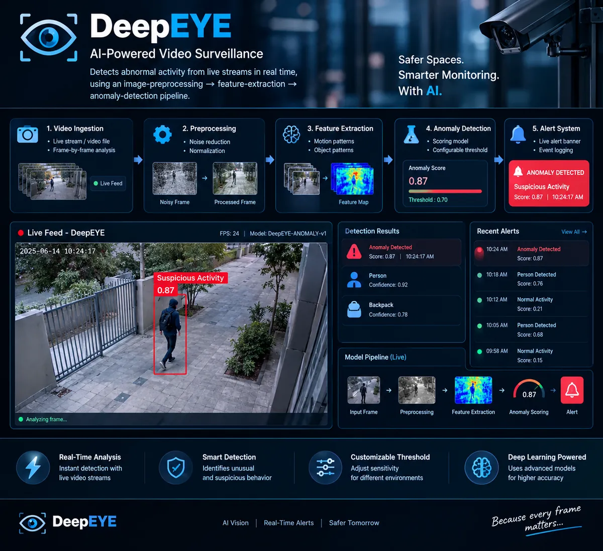

Ajay KodurupakaBuilding software systems that solve real-world problems.
B.Tech in Information Technology with strong foundations in Java, SQL, Data Structures, DBMS, Operating Systems, Computer Networks, and applied AI/ML. I build practical software and intelligent systems across backend development, computer vision, machine learning, and IoT.
Software Engineer with strong CS fundamentals and hands-on project experience.
Built with strong engineering fundamentals and a focus on real-world applications. I hold a B.Tech in Information Technology (CGPA 8.72/10) and work comfortably across Java, SQL, data structures, DBMS, operating systems and computer networks.
Alongside my coursework I build projects in AI/ML, computer vision, real-time systems and IoT, from video anomaly detection to face-recognition attendance and crop recommendation, applying software engineering practices such as testing, version control and clean structure.
JavaSQLData StructuresDBMSOperating SystemsComputer NetworksAI/MLComputer VisionReal-time systems
Presenting and public speaking
Featured Projects
Four completed projects across computer vision, machine learning and IoT, plus one in development. Open Technical details on any card for more.

DeepEYE — AI Video Anomaly Detection
An AI-based video surveillance system designed to detect anomalous events in video streams and video files.
Problem
Reviewing surveillance footage manually is slow and easy to get wrong.
Solution
Frames are preprocessed, converted into motion and object features, and scored by a deep-learning model. Scores above a configurable threshold raise a live alert.
Pipeline: video ingestion, preprocessing (noise reduction, normalization), feature extraction (motion and object patterns), anomaly scoring with Conv3D / ConvLSTM models, then alerts. Threshold tuning was the hardest part, since it trades false alarms against missed events. Built as separate, testable stages.
Feature-engineering pipeline for agricultural data
Technical details
Agricultural data is cleaned, encoded and scaled before training a Random Forest model. Cleaning noisy data took more iteration than training, and I learned to judge the model by how useful its recommendations are, not only by an accuracy score.
A computer-vision-based attendance system that detects and recognizes faces and automatically records attendance.
Problem
Manual roll-call is time-consuming and error-prone.
Solution
Faces are detected and recognized in real time, and attendance is recorded automatically with live confidence feedback.
PythonOpenCVComputer VisionFace Recognition
Real-time face detection
Face recognition
Automated attendance records
Confidence feedback
Technical details
Lighting and face angle were the main accuracy challenges. The project involved balancing recognition speed against accuracy for a kiosk-style use case.
An IoT-based smart key-chain concept using ESP8266 and Arduino with GPS and Bluetooth connectivity.
Problem
Everyday items like keys are easy to misplace.
Solution
A compact embedded design combines GPS location tracking with Bluetooth proximity alerts.
ESP8266ArduinoGPSBluetoothIoT
Real-time location tracking
Bluetooth proximity functionality
Compact, portable hardware design
Technical details
The ESP8266's tight power and memory budget required careful optimization, and running GPS and Bluetooth together meant managing several peripherals and their power draw at once.
REALITY OS — Persistent Multimodal Physical-World Intelligence Platform
A real-time physical-world intelligence platform designed to understand objects, changes, events, sequences, context, and memory from the surrounding environment.
Implemented now
Real-time camera input
Object detection (YOLO)
Computer vision
Real-time visual understanding
Roadmap (planned)
Object tracking
Temporal event understanding
World-state memory
Multimodal reasoning
Prediction
IoT integration
Autonomous actions
PythonYOLOComputer Vision
Skills
Currently learning: Spring Boot, React, system design, LeetCode practice, and AWS / Azure.
Programming
JavaPythonSQLC
Core Computer Science
Data Structures & AlgorithmsOOPDBMSOperating SystemsComputer NetworksComputer Fundamentals